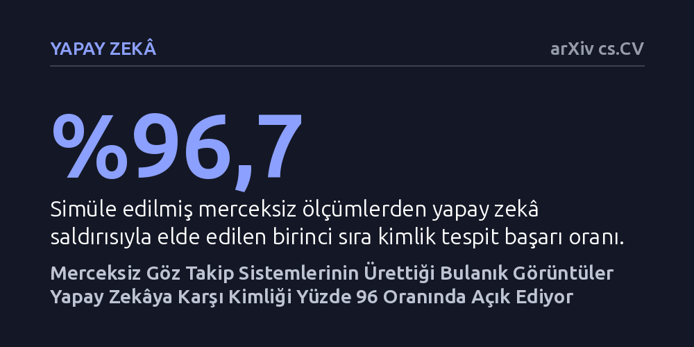

YAPAY-ZEKA · arXiv cs.CV · 2026-09-11
Merceksiz göz takip sistemlerindeki anlamsız desenlerin kullanıcı kimliğini yapay zekâ saldırılarına karşı koruyup korumadığı simülasyonla araştırıldı. Bu şifreli ölçümlerin insan gözüne karmaşık gelse de saldırgan yapay zekâ modellerine karşı yüzde 96,7 oranında kimlik sızıntısına yol açtığı bulundu.
Bir verinin insan gözüne anlamsız veya karmaşık görünmesinin onu yapay zekâya karşı da güvenli kıldığı yanılgısını yıkarak, giyilebilir cihazlarda mahremiyetin görüntü görünüşüne değil veri paylaşım sınırlarına göre tasarlanması gerektiğini gösteriyor.

Sanal gerçeklik başlıkları ve akıllı gözlükler gibi giyilebilir teknolojilerde, kullanıcının nereye baktığını belirlemek amacıyla göze çok yakın kameralar kullanılır. Ne var ki geleneksel kameralar gözün, retinanın ve çevresindeki yüz dokusunun yüksek çözünürlüklü fotoğraflarını kaydeder; bu da ciddi bir kimlik ve biyometrik veri güvenliği açığı yaratır. Bu tehlikeye karşı son yıllarda 'merceksiz algılama' (lensless sensing) sistemleri bir mahremiyet kalkanı olarak önerilmektedir. Merceksiz kameralar, ışığı net bir odak noktasına toplamak yerine ince bir optik maske üzerinden geçirerek doğrudan sensöre ulaştırır.
Bu işlem sonucunda ortaya çıkan ham görüntüler, insan gözü için tamamen anlamsız, bulanık ve şifreli desenlerden ibarettir. Bu görsel anlamsızlık sebebiyle merceksiz sistemler akademik çevrelerde ve sektörde uzun süredir "kendiliğinden gizlilik dostu" olarak kabul edilmiştir. Ancak bir görüntünün insana hiçbir şey ifade etmemesi, modern makine öğrenimi modellerinin de ondan anlam çıkaramayacağı anlamına gelmez. Bu çalışma, insan gözünün tanıyamadığı bu şifreli desenlerin, eğitilmiş yapay zekâ saldırganlarına karşı kullanıcı kimliğini gerçekten koruyup koruyamadığını sorguluyor.
Araştırmacılar bu soruyu yanıtlamak için merceksiz bir göz takip boru hattını uçtan uca simüle ettiler. Çalışmada 36 katılımcının yer aldığı kapalı bir veri kümesi kullanıldı ve optik sistemin ışığı nasıl dağıttığını gösteren sabit ve bilinen bir nokta yayılım fonksiyonu (PSF) modellendi. Deney kapsamında gizlilik tek bir noktada değil; algılama, depolama, hesaplama ve çıktı sınırlarını kapsayan tüm açığa çıkma yüzeylerinde adım adım denetlendi.
Sistemdeki kimlik sızıntısını ölçmek amacıyla doğrusal sınıflandırıcılar ve çok katmanlı algılayıcı (MLP) saldırı probları eğitildi. Bu problar; ham sensör verisinden başlayarak temel bileşenler analizi (PCA) ve sinir ağı darboğazlarıyla yapılan sıkıştırmalara, oradan da nihai bakış açısı vektörlerine kadar her aşamada kullanıcı kimliğinin ne ölçüde geri kazanılabildiğini ampirik olarak test etti. Ayrıca katılımcıların göz kırpma geometrisi veya ışık şiddeti gibi dışsal ipuçlarının sonuçları saptırmasını önlemek amacıyla istatistiksel arındırma yöntemleri uygulandı.
Elde edilen bulgular, merceksiz sistemlerin sunduğu gizlilik güvencesinin temelsiz olduğunu ortaya koydu. İnsan için anlamsız desenlerden oluşan simüle edilmiş ham ölçümler, yapay zekâ probuna tabi tutulduğunda birinci sırada yüzde 96,7 gibi son derece yüksek bir kimlik tespit doğruluğu verdi. Karşılaştırma amacıyla standart kameradan alınan net göz fotoğrafları test edildiğinde elde edilen başarı oranı yüzde 97,7 idi. Yani merceksiz sensörün görüntüyü optik olarak bozması, yapay zekânın kimliği tespit etme başarısını neredeyse hiç düşürmedi.
Veriyi sıkıştırmanın da tek başına koruma sağlamadığı görüldü. Veriler 8 boyutlu temel bileşenler analizine (PCA) veya 8 boyutlu bir sinir ağı darboğazına indirgendiğinde dahi kimlik tespit oranları sırasıyla yüzde 93,2 ve yüzde 91,8 seviyesinde kaldı. Katılımcıların kırpma geometrisi ve ışık yoğunluğu istatistiksel olarak arındırıldığında bile kimlik tespit başarısı yüzde 95,1 olarak ölçüldü. Sistemin ürettiği 128 yönlü ayrık bakış belirteçleri tek karede sızıntıyı yüzde 38,1'e çekse de, bu belirteçlerin kalıntıları yüzde 62,1 ve sürekli bakış çıktıları yüzde 72,6 oranında kimlik sızıntısı vermeyi sürdürdü.
Yazarların çalışmada belirttiği gibi, "görsel anlaşılmazlık insanın yorumlama biçimini yansıtır, öğrenen bir saldırganın neleri geri kazanabileceğini değil." İnsan beyninin pikseller arasındaki karmaşık matematiksel bağıntıları doğrudan çözememesi, derin öğrenme modellerinin de bu örüntülerden biyometrik bir imza çıkaramayacağı anlamına gelmez. Donanım düzeyindeki optik bulanıklaştırma, verideki kimlik izlerini yok etmemekte, yalnızca insan algısından gizlemektedir.
Bu bulgular, artırılmış ve sanal gerçeklik donanımları tasarlayan mühendisler için önemli bir uyarı niteliğindedir. Bir cihazın kullanıcı mahremiyetini koruduğunu iddia etmek için yalnızca sensörden çıkan görselin bulanıklığına güvenilemez. Gerçek bir gizlilik garantisi; verinin sensörden çıktığı, belleğe yazıldığı, işlendiği ve dış uygulamalara aktarıldığı her arayüzde bağımsız yapay zekâ saldırı modellerine karşı titizlikle denetlenmelidir.